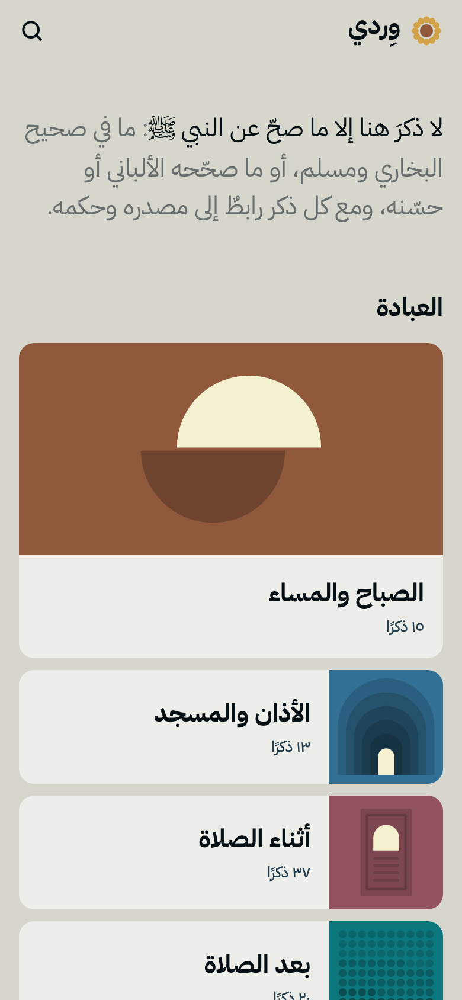
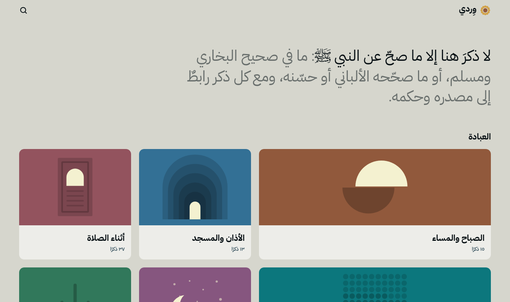
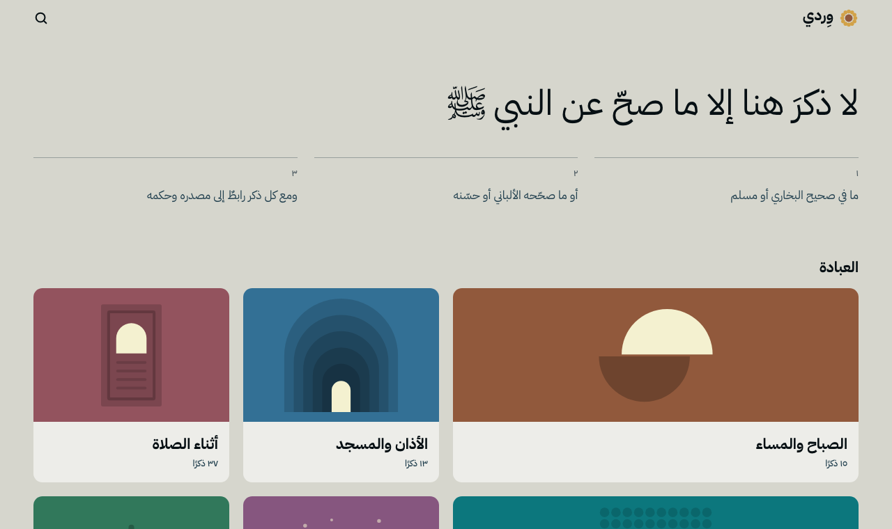
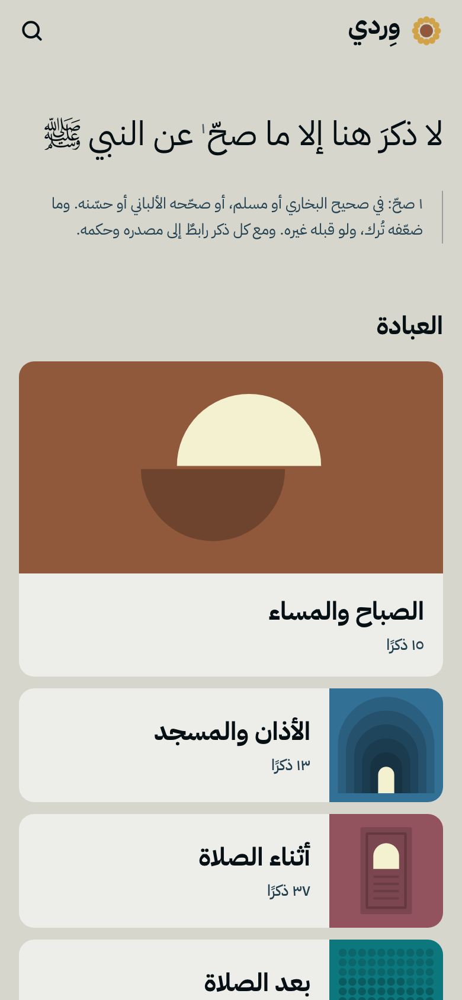
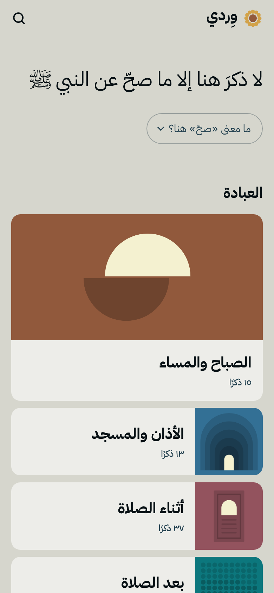
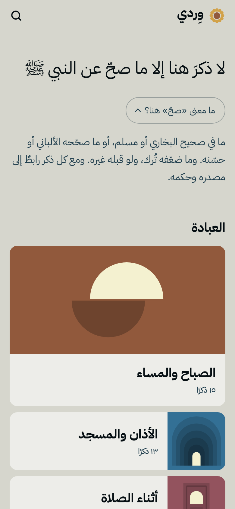
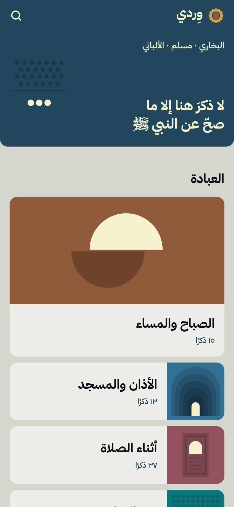

وِردي · الصفحة الرئيسية · الجولة الثانية · ٢٧ نوفمبر ٢٠٢٦
طريق ب، بلا عنوان وسطر تحته
الجملة واحدة في كل المقترحات: «لا ذكرَ هنا إلا ما صحّ عن النبي ﷺ». الذي يتغير هو أين تذهب القاعدة (البخاري ومسلم والألباني) وكيف تظهر. كل مقترح مبني في الموقع الحقيقي ومصوّر على الهاتف وسطح المكتب.
جملة واحدة بحبرين
لا عنوان ولا سطر تحته: جملة واحدة متصلة بحجم واحد. الدعوى بالحبر الكامل، وتكملتها (القاعدة) بحبر باهت. تقرأ العين الدعوى وحدها في لمحة، ومن أراد أكمل.


- أبسطها في البناء: عنصر واحد، ولا شيء جديد في التصميم.
- القاعدة كاملة ظاهرة، بلا نقرة.
- أربعة أسطر على الهاتف.
- هادئة، لا تلفت كما يلفت ب٥.
الدعوى ثم فهرس مرقّم
الدعوى كبيرة، وتحتها القاعدة في ثلاثة بنود مرقّمة بينها خطوط شعرية، كما ترقّم Laws of UX قوائمها. على سطح المكتب تصير البنود ثلاثة أعمدة.


- القاعدة مقسّمة، تُقرأ بنظرة.
- من لغة Laws of UX نفسها (القوائم المرقّمة بالخطوط الشعرية).
- يأخذ أكثر الطول على الهاتف، فتنزل البطاقات.
- ثلاثة بنود لثلاث معلومات صغيرة، فيه شيء من الثِّقل.
الحاشية
على طريقة الكتب العربية: متن وحاشية. على كلمة «صحّ» رقم صغير، وفي الحاشية معناه. على سطح المكتب تقف الحاشية في الطرف الآخر بخط فاصل، وعلى الهاتف تحت الجملة.


- الشرح معلّق على الكلمة التي يسأل عنها القارئ.
- شكل مألوف لقارئ كتب الحديث، وفيه شخصية.
- تقول الحاشية أيضًا «وما ضعّفه تُرك، ولو قبله غيره».
- على الهاتف تعود قريبة من «عنوان ثم سطر».
- الحاشية صغيرة الخط.
الدعوى وسؤال يُفتح
الدعوى وحدها، وتحتها زر «ما معنى «صحّ» هنا؟». يُفتح فيظهر الجواب. مبني بـ<details>
من HTML، بلا JavaScript.



- أنظف شكل في اللمحة الأولى: سطر واحد.
- السؤال بصيغة القارئ، والجواب لمن يريده.
- أكثر الزوار لن يفتحوه، فالقاعدة شبه مخفية.
- زر في رأس الصفحة يزاحم البطاقات على الانتباه.
المسرح الملوّن
المقترحالصفحة الرئيسية تأخذ رأس صفحات الأقسام نفسه: لون كامل العرض من خلف الشريط، والجملة بالأبيض البيضي، وفوقها أسماء المصادر الثلاثة مكان عدد الأذكار. وصورة جديدة بقواعد البطاقات: نقاط كثيرة فوق خط، وثلاث مضيئة تحته. كثير يُعرض، وقليل يمرّ.


- لا عنوان وسطر: الجملة وحدها، و«البخاري · مسلم · الألباني» في موضع الكلمة الصغيرة فوق العنوان، كما في كل قسم.
- الرئيسية تشبه بقية الموقع، فيعرفها الزائر بعد أي صفحة.
- الصورة تقول الدعوى بلا كلام، بقواعد البطاقات (حبران، شكل مجرد، عنصر مضيء واحد). ويمكن أن تتحرك النقاط الثلاث وحدها، على قاعدة «لا يتحرك إلا المضيء».
- لون جديد (أزرق حبري) وصورة جديدة، وكلاهما يحتاج رضاك قبل البناء.
- القاعدة أسماء فقط، بلا «صحّحه أو حسّنه».
- بطاقات الأقسام تنزل نحو سطرين على الهاتف.
ردّك
اكتب رقم المقترح، وإن شئت اخلط بين اثنين (مثلًا «ب٥ مع حاشية ب٣ تحته»)، أو عدّل اللون والصورة:
ب٥
الصفحات الحيّة (ما دام الخادم المحلي يعمل): ب١ · ب٢ · ب٣ · ب٤ · ب٥ · الجولة الأولى